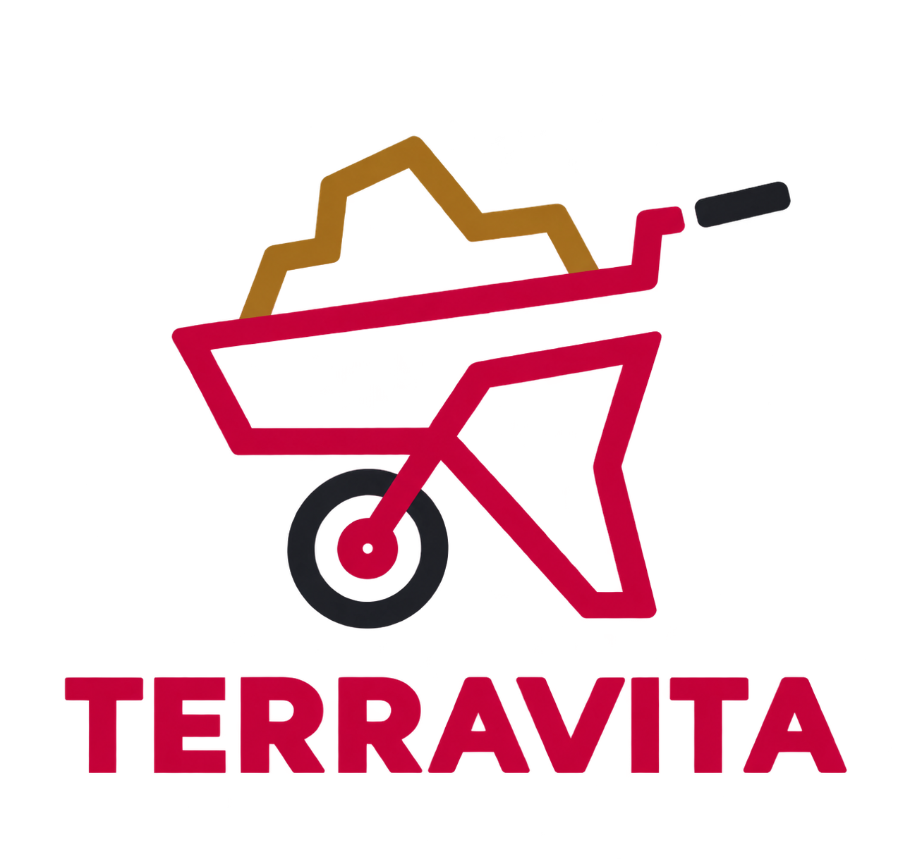
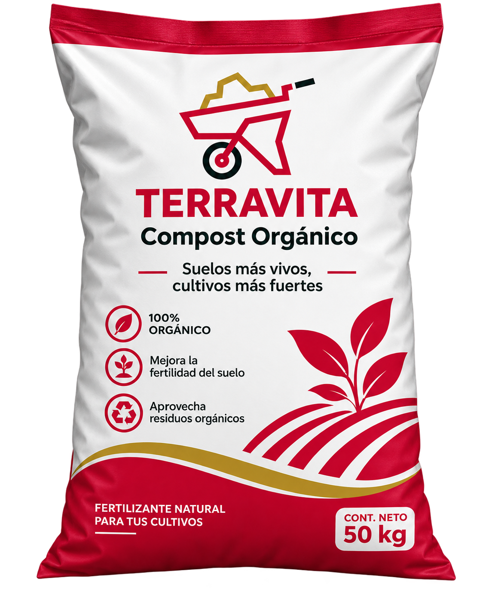

Aprovechamiento
Promovemos el aprovechamiento de residuos orgánicos mediante el compostaje.

TERRAVITA COMPOST S.A.S.Damos nueva vida a los residuos orgánicos mediante compost 100 % orgánico, sin aditivos químicos, para contribuir a una tierra más saludable.


TERRAVITA COMPOST S.A.S. es una iniciativa enfocada en aprovechar los residuos orgánicos y convertirlos en un recurso útil para el cuidado del suelo.
Creemos en las soluciones responsables, el consumo consciente y el valor de darle una segunda oportunidad a los materiales que pueden volver a la tierra.
Apostamos por el aprovechamiento de los residuos orgánicos y el cuidado responsable del medio ambiente.
Kilos de residuos aprovechados
Plantas beneficiadas
Compromiso con lo orgánico
Apostamos por una manera más consciente de relacionarnos con los recursos naturales.
Promovemos el aprovechamiento de residuos orgánicos mediante el compostaje.
Nuestro producto se plantea como compost 100 % orgánico, sin aditivos químicos.
Queremos impulsar hábitos responsables y una cultura de cuidado del medioambiente.
Una alternativa para quienes quieren cuidar sus plantas y aprovechar mejor los recursos orgánicos.

100 % ORGÁNICOUna propuesta elaborada a partir del aprovechamiento de materia orgánica, pensada para contribuir al cuidado y mejoramiento del suelo.
El compostaje convierte los residuos orgánicos en un material que puede aprovecharse para el suelo.
Se seleccionan materiales orgánicos adecuados para iniciar el proceso.
La materia orgánica se descompone bajo condiciones controladas de compostaje.
El compost maduro se prepara para su uso conforme a sus características y recomendaciones.
¿Quieres conocer más sobre nuestro compost orgánico? Escríbenos y conversemos.